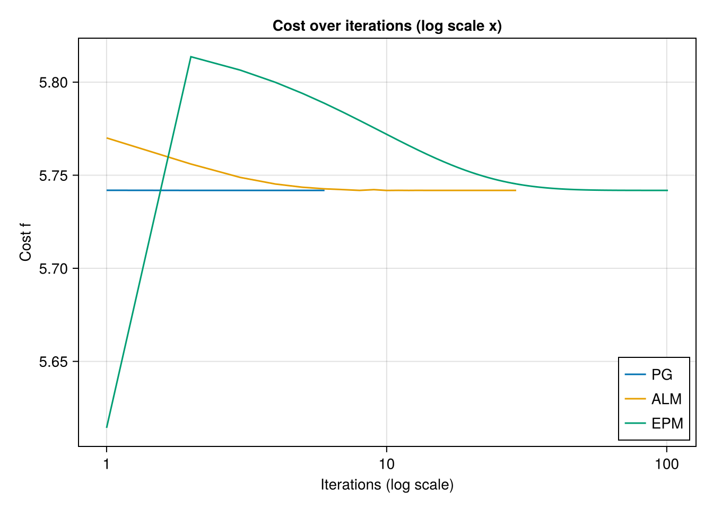

The Constrained mean on Hyperbolic space.
Ronny Bergmann 2027-03-03
Introduction
In this example we compare the Pprojected Gradient Algorithm (PGA) as introduced in [BFNZ25] with both the Augmented Lagrangian Method (ALM) and the Exact Penalty Method (EPM) [LB19].
using Chairmarks, CSV, DataFrames, Manifolds, Manopt, CairoMakie, RandomConsider the constrained Riemannian center of mass for a given set of points ``q_i M$ $i=1,\ldots,N$ given by
\[\operatorname*{arg\,min}_{p\in\mathcal C} \sum_{i=1}^N d_{\mathrm{M}}^2(p,q_i)\]
constrained to a set $\mathcal C \subset \mathcal M$.
For this experiment set $\mathcal M = \mathbb H^2$ is the Hyperbolic space and the constrained set $\mathcal C = C_{c,r}$ as the ball of radius $r$ around the center point $c$, where we choose here $r=1$ and $c = (0,0,1)^{\mathrm{T}}$.
M = Hyperbolic(2)
c = Manifolds._hyperbolize(M, [0, 0])
radius = 1.0
# Sample the boundary
unit_circle = [
exp(M, c, get_vector(M, c, radius .* [cos(α), sin(α)], DefaultOrthonormalBasis())) for
α in 0:(2π / 720):(2π)
]Our data consists of $N=200$ points, where we skew the data a bit to force the mean to be outside of the constrained set $\mathcal C$.
N = 200;
σ = 1.5
Random.seed!(42)
# N random points moved to top left to have a mean outside
data_pts = [
exp(
M,
c,
get_vector(
M, c, σ .* randn(manifold_dimension(M)) .+ [2.5, 2.5], DefaultOrthonormalBasis()
),
) for _ in 1:N
]Cost, gradient and projection
We can formulate the constrained problem above in two different forms. Both share a cost adn require a gradient. For performance reasons, we also provide a mutating variant of the gradient
f(M, p; pts=[op]) = 1 / (2 * length(pts)) .* sum(distance(M, p, q)^2 for q in pts);
grad_f(M, p; pts=[op]) = -1 / length(pts) .* sum(log(M, p, q) for q in pts);
function grad_f!(M, X, p; pts=[op])
zero_vector!(M, X, p)
Y = zero_vector(M, p)
for q in pts
log!(M, Y, p, q)
X .+= Y
end
X .*= -1 / length(pts)
return X
end;We can model the constrained either with an inequality constraint $g(p) \geq 0$ or using a projection onto the set. For the gradient of $g$ and the projection we again also provide mutating variants.
g(M, p) = distance(M, c, p)^2 - radius^2;
indicator_C(M, p) = (g(M, p) ≤ 0) ? 0 : Inf;
function project_C(M, p, r=radius)
X = log(M, c, p)
n = norm(M, c, X)
q = (n > r) ? exp(M, c, (r / n) * X) : copy(M, p)
return q
end;
function project_C!(M, q, p; X=zero_vector(M, c), r=radius)
log!(M, X, c, p)
n = norm(M, c, X)
if (n > r)
exp!(M, q, c, (r / n) * X)
else
copyto!(M, q, p)
end
return q
end;
grad_g(M, p) = -2 * log(M, p, c);
function grad_g!(M, X, p)
log!(M, X, p, c)
X .*= -2
return X
endThe mean
For comparison, we first compute the Riemannian center of mass, that is the minimization above but not constrained to $\mathcal C$. We can then project this onto $\mathcal C$. For the projected mean we obtain $g(p) = 0$ since the original mean is outside of the set, the projected one lies on the boundary.
mean_data = mean(M, data_pts)
mean_projected = project_C(M, mean_data)
g(M, mean_projected)0.0The experiment
We first define the specific data cost functions
_f(M, p) = f(M, p; pts=data_pts)
_grad_f(M, p) = grad_f(M, p; pts=data_pts)
_grad_f!(M, X, p) = grad_f!(M, X, p; pts=data_pts)and in a first run record a projected gradient method solver run
mean_pg = copy(M, c) # start at the center
@time pgms = projected_gradient_method!(
M, _f, _grad_f!, project_C!, mean_pg;
evaluation=InplaceEvaluation(),
indicator=indicator_C,
debug=[:Iteration, :Cost, " ", :GradientNorm, "\n", 1, :Stop],
record=[:Iteration, :Iterate, :Cost, :Gradient],
stopping_criterion=StopAfterIteration(150) |
StopWhenProjectedGradientStationary(M, 1e-7),
return_state=true,
)Initial f(x): 8.519830
# 1 f(x): 5.741908 |grad f(p)|:3.560737798355543
# 2 f(x): 5.741846 |grad f(p)|:1.881900575821152
# 3 f(x): 5.741846 |grad f(p)|:1.8819696248924744
# 4 f(x): 5.741846 |grad f(p)|:1.881964795224877
# 5 f(x): 5.741846 |grad f(p)|:1.8819649705365404
# 6 f(x): 5.741846 |grad f(p)|:1.8819649640556793
At iteration 6 algorithm has reached a stationary point, since the distance from the last iterate to the projected gradient (1.0030679901141345e-8) less than 1.0e-7.
1.589012 seconds (7.34 M allocations: 370.937 MiB, 3.65% gc time, 99.67% compilation time)
# Solver state for `Manopt.jl`s Projected Gradient Method
After 6 iterations
## Parameters
* inverse retraction method: LogarithmicInverseRetraction()
* retraction method: ExponentialRetraction()
## Stepsize for the gradient step
ConstantLength(1.0; type=:relative)
## Stepsize for the complete step
ArmijoLinesearch(;
initial_stepsize=1.0
retraction_method=ExponentialRetraction()
contraction_factor=0.95
sufficient_decrease=0.1
)
## Stopping criterion
Stop When _one_ of the following are fulfilled:
* Max Iteration 150: not reached
* projected gradient stationary (<1.0e-7): reached
Overall: reached
This indicates convergence: Yes
## Debug
:Iteration = [(:Iteration, "# %-6d"), (:Cost, "f(x): %f"), " ", (:GradientNorm, "|grad f(p)|:%s"), "\n", 1]
:Stop = :Stop
## Record
(Iteration = RecordGroup([RecordIteration(), RecordIterate(Vector{Float64}), RecordCost(), RecordGradient{Vector{Float64}}()]),)and similarly perform a first run of both the augmented Lagrangian method and the exact penalty method
mean_alm = copy(M, c)
@time alms = augmented_Lagrangian_method!(
M, _f, _grad_f!, mean_alm;
evaluation=InplaceEvaluation(),
g=[g], grad_g=[grad_g!],
debug=[:Iteration, :Cost, " ", "\n", 10, :Stop],
record=[:Iteration, :Iterate, :Cost],
return_state=true,
)Initial f(x): 8.519830
# 10 f(x): 5.741814
# 20 f(x): 5.741845
The algorithm computed a step size (5.830448990119683e-11) less than 1.0e-10.
1.748130 seconds (9.92 M allocations: 503.845 MiB, 4.47% gc time, 99.07% compilation time)
# Solver state for `Manopt.jl`s Augmented Lagrangian Method
After 29 iterations
## Parameters
* ϵ: 0.0001348962882591652 (ϵ_min: 1.0e-6, θ_ϵ: 0.933254300796991)
* λ: Float64[] (λ_min: -20.0, λ_max: 20.0)
* μ: [0.94098958634295] (μ_max: 20.0)
* ρ: 15241.579027587262 (θ_ρ: 0.3)
* τ: 0.8
* current penalty: 1.1472098826459387e-9
## Stopping criterion
Stop When _one_ of the following are fulfilled:
* Max Iteration 300: not reached
* Stop When _all_ of the following are fulfilled:
* Field :ϵ ≤ 1.0e-6: not reached
* |Δp| < 0.00014454397707459258: not reached
Overall: not reached
* Stepsize s < 1.0e-10: reached
Overall: reached
This indicates convergence: No
## Debug
:Iteration = [(:Iteration, "# %-6d"), (:Cost, "f(x): %f"), " ", "\n", 10]
:Stop = :Stop
## Record
(Iteration = RecordGroup([RecordIteration(), RecordIterate(Vector{Float64}), RecordCost()]),)mean_epm = copy(M, c)
@time epms = exact_penalty_method!(
M, _f, _grad_f!, mean_epm;
evaluation = InplaceEvaluation(),
g = [g], grad_g = [grad_g!],
debug = [:Iteration, :Cost, " ", "\n", 25, :Stop],
record = [:Iteration, :Iterate, :Cost],
return_state = true,
)Initial f(x): 8.519830
# 25 f(x): 5.747352
# 50 f(x): 5.742157
# 75 f(x): 5.741863
# 100 f(x): 5.741847
The value of the variable (ϵ) is smaller than or equal to its threshold (1.0e-6).
At iteration 101 the algorithm performed a step with a change (5.712257693422003e-8) less than 1.0e-6.
1.078051 seconds (7.59 M allocations: 359.751 MiB, 4.62% gc time, 89.39% compilation time)
# Solver state for `Manopt.jl`s Exact Penalty Method
After 101 iterations
## Parameters
* ϵ: 1.0e-6 (ϵ_min: 1.0e-6, θ_ϵ: 0.933254300796991)
* u: 1.0e-6 (ϵ_min: 1.0e-6, θ_u: 0.8912509381337456)
* ρ: 3.3333333333333335 (θ_ρ: 0.3)
## Stopping criterion
Stop When _one_ of the following are fulfilled:
* Max Iteration 300: not reached
* Stop When _all_ of the following are fulfilled:
* Field :ϵ ≤ 1.0e-6: reached
* |Δp| < 1.0e-6: reached
Overall: reached
Overall: reached
This indicates convergence: Yes
## Debug
:Iteration = [(:Iteration, "# %-6d"), (:Cost, "f(x): %f"), " ", "\n", 25]
:Stop = :Stop
## Record
(Iteration = RecordGroup([RecordIteration(), RecordIterate(Vector{Float64}), RecordCost()]),)Benchmark
After a first run we now Benchmark the three algorithms with Chairmarks.jl
pg_b = @be projected_gradient_method!(
$M, $_f, $_grad_f!, $project_C!, $(copy(M, c));
evaluation=$(InplaceEvaluation()),
indicator=$indicator_C,
stopping_criterion=$(
StopAfterIteration(150) | StopWhenProjectedGradientStationary(M, 1e-7)
),
) evals = 1 samples = 5 seconds = 100Benchmark: 5 samples with 1 evaluation
min 183.583 μs (3862 allocs: 145.734 KiB)
median 231.000 μs (5486 allocs: 208.797 KiB)
mean 290.992 μs (7353.60 allocs: 281.319 KiB)
max 605.583 μs (17260 allocs: 666.000 KiB)alm_b = @be augmented_Lagrangian_method!(
$M, $_f, $_grad_f!, $(copy(M, c));
evaluation = $(InplaceEvaluation()),
g = $([g]),
grad_g = $([grad_g!]),
) evals = 1 samples = 5 seconds = 100Benchmark: 5 samples with 1 evaluation
min 13.538 ms (322539 allocs: 11.890 MiB)
median 15.662 ms (391018 allocs: 14.427 MiB)
mean 15.472 ms (369894.80 allocs: 13.646 MiB, 2.63% compile time)
max 16.310 ms (400764 allocs: 14.791 MiB, 13.15% compile time)epm_b = @be exact_penalty_method!(
$M, $_f, $_grad_f!, $(copy(M, c));
evaluation = $(InplaceEvaluation()),
g = $([g]),
grad_g = $([grad_g!]),
) evals = 1 samples = 5 seconds = 100Benchmark: 5 samples with 1 evaluation
min 87.115 ms (1981548 allocs: 73.062 MiB)
median 90.660 ms (1981548 allocs: 73.062 MiB)
mean 94.963 ms (1981548 allocs: 73.062 MiB, 6.10% gc time)
max 109.907 ms (1981548 allocs: 73.062 MiB, 16.78% gc time)Plots & results
pb_x(data) = [convert(PoincareBallPoint, p).value[1] for p in data]
pb_y(data) = [convert(PoincareBallPoint, p).value[2] for p in data]The results are
fig = Figure()
axis = Axis(fig[1, 1], title = "The ball constrained mean comparison", aspect = 1)
arc!(Point2f(0, 0), 1, -π, π; color = :black)
lines!(axis, pb_x(unit_circle), pb_y(unit_circle); label = L"δC")
scatter!(axis, pb_x(data_pts), pb_y(data_pts), label = L"d_i")
scatter!(axis, pb_x([mean_data]), pb_y([mean_data]), label = L"m")
scatter!(
axis,
pb_x([mean_projected]),
pb_y([mean_projected]),
label = L"m_{\text{proj}}",
)
scatter!(axis, pb_x([mean_alm]), pb_y([mean_alm]), label = L"m_{\text{alm}}")
scatter!(axis, pb_x([mean_epm]), pb_y([mean_epm]), label = L"m_{\text{epm}}")
scatter!(axis, pb_x([mean_pg]), pb_y([mean_pg]), label = L"m_{\text{pg}}")
axislegend(axis, position = :rt)
xlims!(axis, -1.02, 1.5)
ylims!(axis, -1.02, 1.5)
hidespines!(axis)
hidedecorations!(axis)
fig
min_cost = minimum(map(p -> _f(M, p), [mean_pg, mean_alm, mean_epm]))5.7418455315254855fig2 = Figure()
axis2 = Axis(
fig2[1, 1];
title="Cost over iterations (log scale x)",
xscale=log10,
yscale=identity,
xticks=[1, 10, 100],
)
lines!(
axis2,
get_record(pgms, :Iteration, :Iteration),
get_record(pgms, :Iteration, :Cost);
label="PG",
)
lines!(
axis2,
get_record(alms, :Iteration, :Iteration),
get_record(alms, :Iteration, :Cost);
label="ALM",
)
lines!(
axis2,
get_record(epms, :Iteration, :Iteration),
get_record(epms, :Iteration, :Cost);
label="EPM",
)
axislegend(axis2; position=:rb)
#ylims!(axis2, min_cost-0.001,)
axis2.xlabel = "Iterations (log scale)"
axis2.ylabel = "Cost f"
fig2
Literature
- [BFNZ25]
- R. Bergmann, O. P. Ferreira, S. Z. Németh and J. Zhu. On projection mappings and the gradient projection method on hyperbolic space forms. Preprint, in preparation (2025).
- [LB19]
- C. Liu and N. Boumal. Simple algorithms for optimization on Riemannian manifolds with constraints. Applied Mathematics & Optimization (2019), arXiv:1091.10000.
Technical details
This tutorial is cached. It was last run on the following package versions.
Status `/ManoptExamples.jl/examples/Project.toml`
[6e4b80f9] BenchmarkTools v1.6.0
[336ed68f] CSV v0.10.15
[13f3f980] CairoMakie v0.13.4
[0ca39b1e] Chairmarks v1.3.1
[35d6a980] ColorSchemes v3.29.0
⌅ [5ae59095] Colors v0.12.11
[a93c6f00] DataFrames v1.7.0
[7073ff75] IJulia v1.27.0
[682c06a0] JSON v0.21.4
[8ac3fa9e] LRUCache v1.6.2
[d3d80556] LineSearches v7.3.0
[ee78f7c6] Makie v0.22.4
[af67fdf4] ManifoldDiff v0.4.2
[1cead3c2] Manifolds v0.10.16
[3362f125] ManifoldsBase v1.0.3
[0fc0a36d] Manopt v0.5.12
[5b8d5e80] ManoptExamples v0.1.14 `..`
[51fcb6bd] NamedColors v0.2.3
[91a5bcdd] Plots v1.40.12
[08abe8d2] PrettyTables v2.4.0
[6099a3de] PythonCall v0.9.24
[f468eda6] QuadraticModels v0.9.8
[1e40b3f8] RipQP v0.6.4
Info Packages marked with ⌅ have new versions available but compatibility constraints restrict them from upgrading. To see why use `status --outdated`This tutorial was last rendered April 13, 2025, 14:06:35.